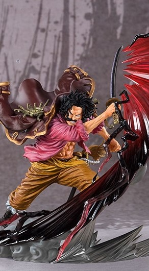

Exclusive One Piece Figurines

Tamashi Nations - One Piece - GOL.D.Roger-Kamusari, Bandai Spirits Figuarts Zero
FEATURES
- Theme: Anime
- Anime: One Piece
- Brand: TAMASHII NATIONS
- Item Dimensions (L x W x H): 8.5 x 12.5 x 8 inches
- Material: Acrylonitrile Butadiene Styrene
- Collection Name: Gol.D.Roger- Roger-Kamusari
- Watch Product Review
ABOUT THIS ITEM
- Spectacular effects and dynamic poses define CHOGEKISEN - EXTRA BATTLE, and GOL.D.ROGER-KAMUSARI- joins the series!
- They're high-impact distillations of the One Piece world, finished with gorgeous effects.
- The set includes the figure and a stand.
- Replicating the moment he used the Kamusari divine intervention attack to defeat Oden Kozuki, it utilizes translucent effect parts to heighten the impact
- Approx. 8in tall, Highly Detailed, Anime Accurate
- Only product with affixed official Bluefin and Bandai Namco label has been thoroughly tested for safety and meets all North American consumer product safety regulations and entitles the purchaser to product support assistance
PRICE : RM 119.99